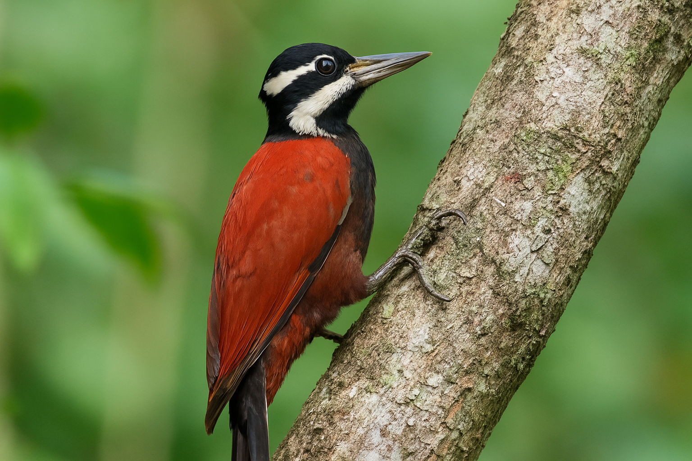

Descubren nueva especie de ave en la selva amazónica
Un equipo de científicos ha descubierto una especie de ave nunca antes registrada en la selva amazónica. Este hallazgo es importante para la conservación de la biodiversidad en la región.
Un equipo de científicos ha descubierto una especie de ave nunca antes registrada en la selva amazónica. Este hallazgo es importante para la conservación de la biodiversidad en la región.